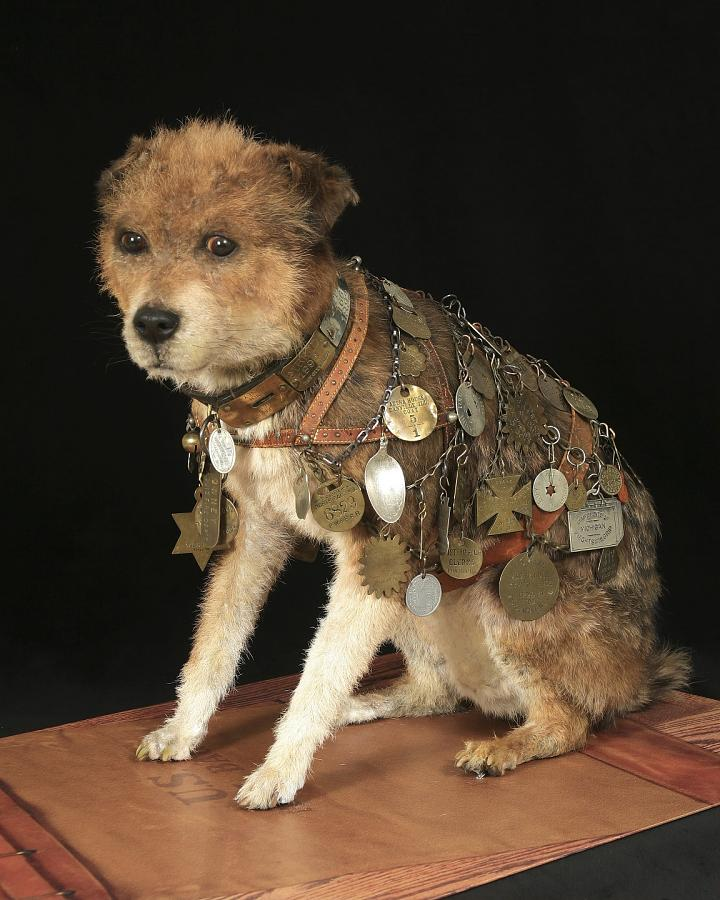

In 1888, a scruffy dog found a home at Albany’s post office. He rode the mail trains, collecting friends—and the tags they gave him—along the way.
Scroll to discover his story

Owney and his travel tags Preserved specimen · Smithsonian National Postal Museum
FROM RAILWAY STOPS TO SMALL KEEPSAKESTHE JOURNEY · THE COLLECTION · YOUR TAG
A little dog, a life full of journeys. More than a century ago, this was his world.
Owney’s journey.
AI-generated background image
Choose a shape, theme, or material first to reveal its available connections and counts. Counts follow your selection order, within the selected year or story scope and before date highlighting. Click a selected icon again to clear just that filter. Hover or focus Shape to reveal the Theme expand button, then Theme to reveal the Material expand button. Hover or focus a plus to preview its first icon; click to expand the choices. The × in a column or its breadcrumb clears that filter and folds the column. The minus or Escape only folds it, keeping an active filter visible in the breadcrumb. On touch screens, tap to expand Theme, then Material.
Shape
Theme
Material
No tags match these filters.
Hover to preview · Drag to rotateTap a tag to explore
Confirmed placesSelected dates
SOME STORIES HAVE GAPS
Leave room for the unknown.
A broad date is a span, and an associated town is not always a visit. Broadly dated objects stay in the collection. Tags with a precise date but an unresolved location can appear in the cube without a map point.
KEEP EXPLORING / 02
02 / WHAT PEOPLE GAVE HIM
Small objects. Many stories.
377 tags, each with a story to discover. Choose an object to read its museum record.
No objects match. .
All 377 tag records from the 22 September 2026 search snapshot are included. Shapes are visually reviewed groupings of the main object outline, not museum catalog fields. Browsing themes are editorial groupings; “Other connections” includes objects without a specific theme assignment. Dates and places retain the museum’s wording. These are museum photographs with backgrounds removed and display size normalized. Select a tag to see its unedited museum photograph. Collar-mounted tag details are labeled.
KEEP EXPLORING / 03
Small reminders of a life well traveled.
03 / A NEW GENERATION OF FRIENDS
His journey continues. Leave a little of yours.
Once, admirers gave Owney tags to remember them. What would yours say?
A place. A few words. A new connection. Add a digital tag to this shared collection of Owney’s friends.
This keepsake contains the historical visualization. Add your tag to the shared collection online.